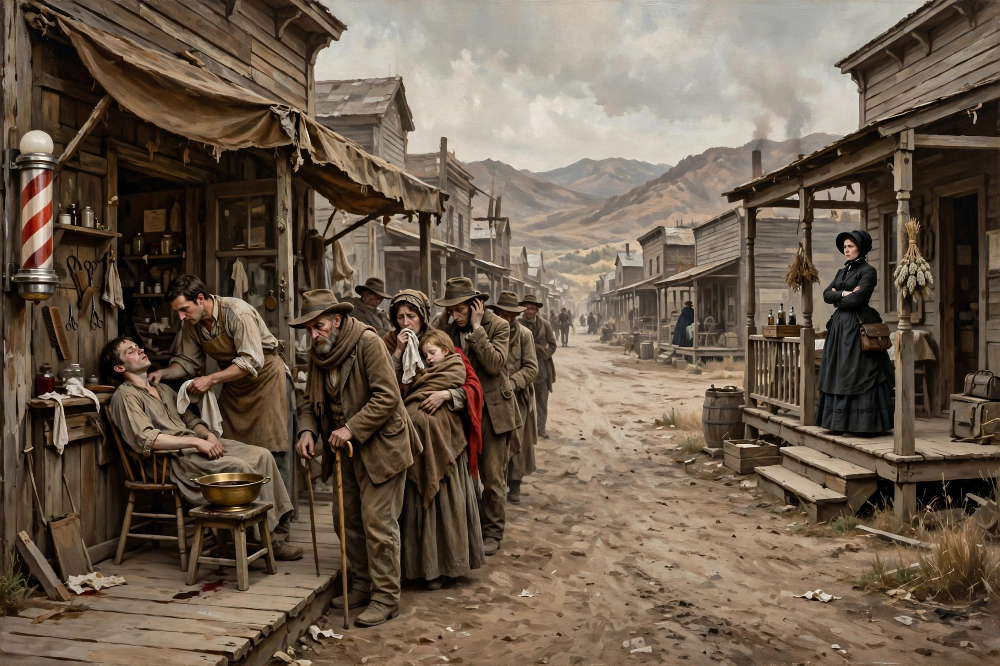
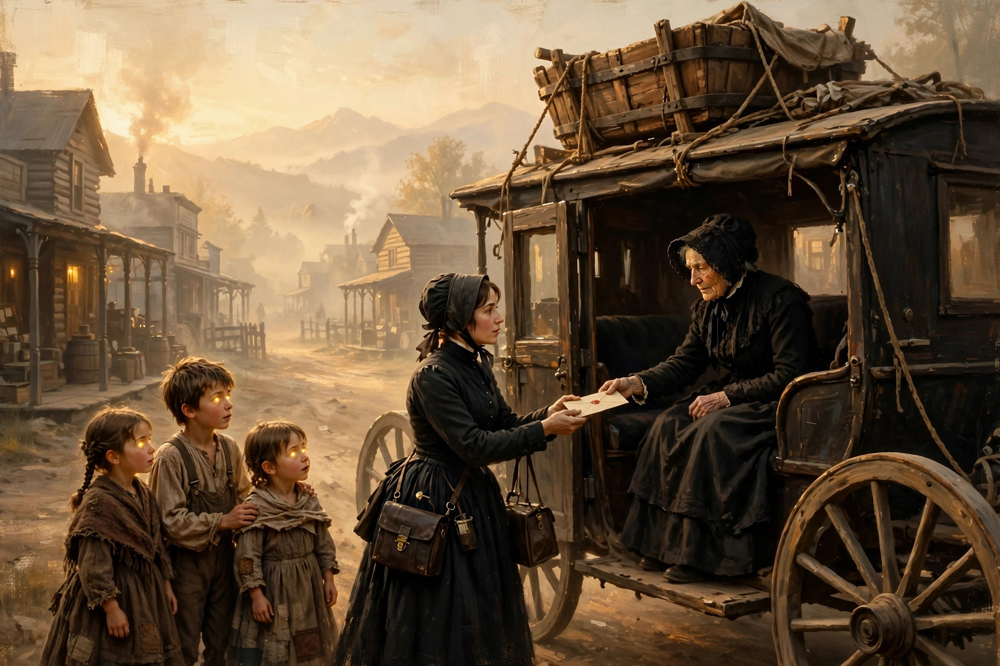

经典美剧《女医生》观剧笔记 2（S1E2-3）
欢迎点击上方名片关注我的公众号。您的支持是我坚持原创的最大动力。
S1E2
疫情考验
小镇上来了一名不速之客，还是位发热的病患。奎恩医生初步判断为流感，收治了这位病患。但这位病患不久就去世了。小镇一切如常，大家没有意识到一场疫情正在袭来。在当时的医疗条件下，流感是极其凶险的流行病，一旦患上甚至有生命危险。
接下来小镇上的居民一个接一个倒下，气氛开始变得恐慌。但很多人压根都不知道传染病是怎么回事。奎恩医生在镇上亲眼目睹荒唐的一幕。有些流感患者不来找她求助，宁愿去请小镇的理发师帮他们做“放血”治疗。在现代医学诞生前及诞生初期，这种荒谬透顶的“放血”疗法在欧美一度非常盛行。现在看来当然和愚昧的迷信无二了。

奎恩医生立即联系小镇牧师，商量在小镇上建立一家临时医院，专门用于集中隔离治疗流感患者，同时阻止疫情蔓延。牧师先建议用教堂，但奎恩医生说不行，得需要不同的房间，这样可以根据病情严重程度将患者分配到不同房间。即便到了现在，这种隔离治疗传染病的思路仍然没有过时，在当时当然是很超前了。 正当大家为临时医院的选址一筹莫展时，奎恩医生想到Charlotte有个公寓空着。但牧师说，这个公寓被银行收走，并且上了封条，如果我们征用的话属于非法侵入(trespassing)。一心救人的奎恩医生顾不了许多，果断地说，那我去好了。
在Sully的帮助下，奎恩医生拆掉了公寓的封条。然后告诉大家，把所有流感病患送到这里来，否则小镇就要团灭了。
接下来，临时医院收治了很多患者。疫情暂时得到了控制。但对于已病倒的患者奎恩医生也束手无策，毕竟当时还没有治疗流感的疫苗。她能做的只是给他们喂退热药，并定时用湿毛巾物理降温。但效果不理想，她只能眼睁睁地看着这些患者越病越重，甚至其中有些病情恶化去世。正当奎恩医生心乱如麻时，Sully向她建议试试印第安人的草药。但奎恩医生婉拒了。Sully说你是不是因为这是印第安人的药就不用。奎恩医生连忙否认，解释说只是不熟悉用法，也不清楚有没有不良反应。
越来越多的人倒下，包括之前给人放血治疗的理发师。不久后连奎恩医生自己也倒下了。Sully不再犹豫，立刻派Matthew出发去印第安部落求助，他自己留下来照顾奎恩医生。Matthew带领印第安酋长回到临时医院，Sully不顾其他人阻拦抱起奎恩医生就走。他们走后，Matthew找到镇上的电报员给奎恩医生的母亲发了封电报，以防不测。
Sully带着奎恩来到印第安部落，酋长似乎为她进行了某种祭祀仪式（就理解为他们的“跳大绳”好了）。仪式完毕后，Sully问酋长，她能活吗？酋长答，取决于你。
Sully抱着奎恩医生回到医院，嘱咐每小时给她喂一次草药。他还带了更多的草药，分发给大家服用。草药果然管用，奎恩医生终于退烧了。大家的病情也都得到了缓解。
一场危机过去，小镇经受了考验，初来乍到的奎恩医生何尝不是呢。由于她的果断正确处置，疫情得到了有效控制。但由于当时医疗条件所限，她自己也差点命丧流感。说来有点讽刺，倒是她起初不太信任还有点玄学意味的印第安草药最终救了大家。
S1E3
母亲来访
一辆邮车驶进小镇，带来了镇上人们需要的物资（包括奎恩医生需要的药）。同车来的还有一位特殊的客人，就是奎恩医生的母亲。奎恩见到母亲很是意外，问她为何到访。毕竟母亲之前的回信那么决绝，伤透了她的心。母亲说收到一封电报，说你病得快死了。母亲看到奎恩面色还好，也就没有多说，问镇上哪有酒店。奎恩说这里没有酒店，你跟我们住一起吧。接着将三个养子介绍给母亲。
母亲看到女儿的住处从外观到陈设都十分简陋，震惊地问“你真的住这儿”？女儿自豪地说是的。短暂的沉默后，女儿说你一定很热吧。Matthew马上过来讨好地邀请“外婆”去河里洗澡，Brian在一旁补充说“我们会帮你注意蛇”。外婆连忙婉拒，说下次吧。母亲和女儿聊了下收养三个孩子的事，说你怎么答应一个几乎不认识的女人这么重要的事？女儿回答，有些人你只认识一会，就觉得好像认识她一辈子了（这就是所谓“缘分”吧）。一会，Matthew和Brian游泳回来，手里拎着几条硕大的鱼，高兴地说晚餐有好吃的了。看样子孩子们还是很喜欢这个有点严肃的外婆的。
当Matthew和Brian和外婆迅速混成熟人时，Colleen却一直一个人呆着闷闷不乐。细心的外婆去和她聊了聊，找到了原因。原来Colleen是初潮来了，但没人和她讲过这方面的知识，因此感到非常害怕。Colleen担心地问外婆，我是不是会死啊。外婆笑着回答，当然不会，但你已经从女孩成为女人了。接着外婆跟奎恩医生谈及此事。奎恩医生听说后有点自责，觉得自己对待孩子不够心细，还是做母亲的经验不足啊。奎恩医生找到Colleen希望补救，但Colleen态度冷淡。毕竟给她在这方面扫盲的还是远道而来的外婆。
一次外婆拿个盆子在屋外想随便洗洗，不巧遇上Sully，吓了一跳。外婆慌忙跑回屋里，告诉奎恩遇到了“野蛮人”。奎恩马上明白她指的是Sully，忙解释说他是朋友，并无恶意。这时Sully来敲门，奎恩讽刺地告诉外婆，“野蛮人可不会敲门”。Sully进来很绅士地向外婆致歉，说无意惊扰大驾。两人算是认识了。
外婆安顿下来后，奎恩医生遭遇了一场小危机。一天，一个来自银行的人告知正在诊所的奎恩医生，她所在的诊所是银行的资产，银行现在要收回资产，要求她限期搬出。然后不由分说地在门口钉上一个牌子，表明这是待拍卖的银行资产，不得非法侵入。 奎恩医生追问那个人，能不能这房屋能不能出租给她，毕竟这是镇上唯一的医疗设施。那人毫不在乎地说，银行不会出租，但会拍卖。奎恩医生想都没想就说，那我买了，但我需要按揭。那人轻蔑地说，银行不会给单身女士提供按揭，如果您是已婚，我很乐于与您的先生谈此事。接着不怀好意地问“您有计划结婚吗”？感到被冒犯的奎恩医生回答“不关你事”。那人丢下一句“那就是没有计划咯“就走了。
（从此段对话可知在当时美国妇女地位之低。单身女士连按揭的资格都没有，没有独立的信用，只能算是男人的附庸。哪怕是医生这么高端的职业也不例外。）
奎恩医生暂时没别的办法只好先在简陋的住处开诊。镇上的铁匠在一次事故中烧伤。本来他可以在诊所得到较好的救治，但现在由于诊所被银行收走，只好用马车把他运到小镇边缘的住处治疗。可住处条件太过简陋不适合治疗病人，尤其是伤重的病人。所以眼下的当务之急是搞定银行，拿回诊所。
一天，奎恩医生要去镇上会见银行的人，两个儿子去友人农场帮忙，家里只有Colleen和外婆。奎恩医生请Colleen留下照顾烧伤病人，但Colleen不愿意，她也想去镇上。这时外婆主动接过担子说她可以照顾病人。奎恩医生用眼神表达了对母亲的感激。
奎恩母女走后，外婆独自在家照看病人。后来，Sully来访，两人交谈了几句。外婆了解到奎恩他们现在租住的地方原来是Sully的住宅，进而得知Sully前妻和孩子的不幸往事，为他感到难过。外婆接着感谢Sully让她的女儿住在这儿。Sully回答了一句肺腑之言：如果我们以前有一位像您女儿这样的医生，我妻子和孩子可能还活着。这句话意味深长，而且份量很重，外婆听后深受触动。
奎恩医生带着所有积蓄1000美元找到银行的人，说这是预付款，余下的钱我会想办法。银行的人坚持不让步，说1500一个子不少，我们不会贷款给单身女士。奎恩医生无计可施，只得黯然离开。奎恩回头把这事跟母亲说了，希望母亲能帮忙资助一笔钱，好让她把诊所所在房屋从银行买过来。母亲当即拒绝，表示不想帮她毁了自己的生活。两人话不投机，不欢而散。
时间过得很快，烧伤的铁匠在众人的悉心照顾下慢慢康复，外婆也到了要离开的时候。临别之际，孩子们给外婆准备了一个神秘礼物——他们亲手打造的一个精美的浴缸。外婆喜出望外，从舒适的老家来到这啥也没有的“蛮荒之地”，终于能够舒舒服服地泡个澡了。看来孩子们真的很爱这位没来多久的外婆。
踏上离开的邮车时，母亲递给奎恩一个信封，里面正是奎恩需要的那笔钱。奎恩不知说什么，而母亲临别只有一句“医生需要诊所”。母亲终于通过行动，认可了女儿的人生抉择。

小镇杂货店老板向母亲说的一番话是对这对母女关系（也包括天下所有家庭的亲子关系）的最佳注释：Seems like parents and children spend half of their lives not seeing eye to eye. By the time they do find some common ground, there's barely any time left to enjoy it.(好像很多父母和孩子半辈子都合不来。当他们总算找到一些共同点时，却发现享受天伦之乐的时光已不多了）
往期精彩文章：
经典美剧《女医生》观剧笔记 1（S1E1）
战火中的美好人性
史上最全能特工要谢幕了？